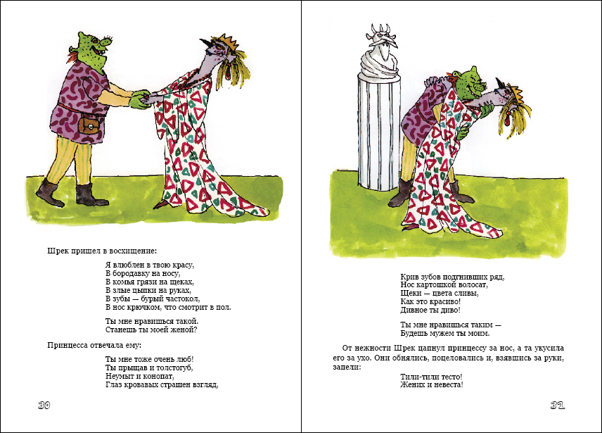

За несколько лет до премьеры Шрека в кинотеатрах по всему миру, автор Уильям Стейг написал свою книгу для детей, и назвал он ее «Shrek!». В этой книге можно найти всем знакомые истории, которые позже появились и в прославившемся мультфильме студии DreamWorks. А ведь началось все с того, что через год после публикации сказки Стейга, в 1991 году, Стивен Спилберг купил права на ее адаптацию для киноэкранов.
Книга состоит всего из 32-х страниц, а Schreck/Shrek в переводе на немецкий и на идиш означает «страх, ужас».
Сходства и различия экранного и книжного Шрека
Шрек добр, дружит с говорящим Ослом / благородным скакуном. В книге умеет выдыхать огонь, оттуда же мы можем познакомиться с его родителями, про которых в фильме практически нет сведений (однажды Шрек рассказывает Фионе, что отец хотел съесть его)
Оба спасают принцессу. Только в фильме любовь приходит случайно, а в книге Шрек целенаправленно ищет свою принцессу. Также книжный Шрек вклюбляется в Фиону, которая изначально была откровенно непривлекательной королевской особой.
